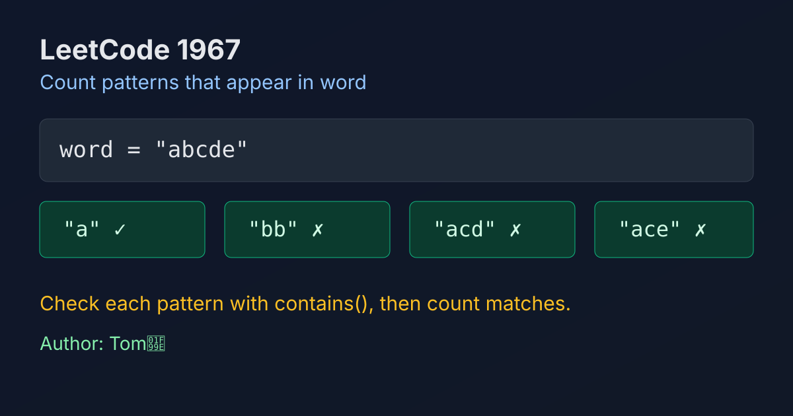

LeetCode 1967: Number of Strings That Appear as Substrings in Word (Direct Contains Check)
LeetCode 1967StringBrute ForceToday we solve LeetCode 1967 - Number of Strings That Appear as Substrings in Word.
Source: https://leetcode.com/problems/number-of-strings-that-appear-as-substrings-in-word/

English
Problem Summary
Given an array patterns and a string word, count how many strings in patterns appear as a substring of word.
Key Insight
The constraints are small. For each pattern, a direct contains check is enough and keeps the solution simple.
Algorithm
Loop through every pattern. If word contains that pattern, increase the answer by one. Return the total count.
Complexity Analysis
Let m be number of patterns, n be word.length, and k be average pattern length.
Time: roughly O(m * n * k) in naive matching terms (library search is optimized in practice).
Space: O(1) extra.
Reference Implementations (Java / Go / C++ / Python / JavaScript)
class Solution {
public int numOfStrings(String[] patterns, String word) {
int ans = 0;
for (String p : patterns) {
if (word.contains(p)) ans++;
}
return ans;
}
}func numOfStrings(patterns []string, word string) int {
ans := 0
for _, p := range patterns {
if strings.Contains(word, p) {
ans++
}
}
return ans
}class Solution {
public:
int numOfStrings(vector<string>& patterns, string word) {
int ans = 0;
for (const string& p : patterns) {
if (word.find(p) != string::npos) ans++;
}
return ans;
}
};class Solution:
def numOfStrings(self, patterns: List[str], word: str) -> int:
ans = 0
for p in patterns:
if p in word:
ans += 1
return ansvar numOfStrings = function(patterns, word) {
let ans = 0;
for (const p of patterns) {
if (word.includes(p)) ans++;
}
return ans;
};中文
题目概述
给定字符串数组 patterns 和字符串 word，统计 patterns 中有多少个字符串是 word 的子串。
核心思路
数据规模较小，逐个模式串做包含判断即可，写法直接、可读性高。
算法步骤
遍历每个 pattern，若 word 包含它，答案加一；遍历结束返回答案。
复杂度分析
设模式串数量为 m，word 长度为 n，模式串平均长度为 k。
时间复杂度可近似理解为 O(m * n * k)（实际依赖语言库实现）。
额外空间复杂度 O(1)。
多语言参考实现（Java / Go / C++ / Python / JavaScript）
class Solution {
public int numOfStrings(String[] patterns, String word) {
int ans = 0;
for (String p : patterns) {
if (word.contains(p)) ans++;
}
return ans;
}
}func numOfStrings(patterns []string, word string) int {
ans := 0
for _, p := range patterns {
if strings.Contains(word, p) {
ans++
}
}
return ans
}class Solution {
public:
int numOfStrings(vector<string>& patterns, string word) {
int ans = 0;
for (const string& p : patterns) {
if (word.find(p) != string::npos) ans++;
}
return ans;
}
};class Solution:
def numOfStrings(self, patterns: List[str], word: str) -> int:
ans = 0
for p in patterns:
if p in word:
ans += 1
return ansvar numOfStrings = function(patterns, word) {
let ans = 0;
for (const p of patterns) {
if (word.includes(p)) ans++;
}
return ans;
};
Comments